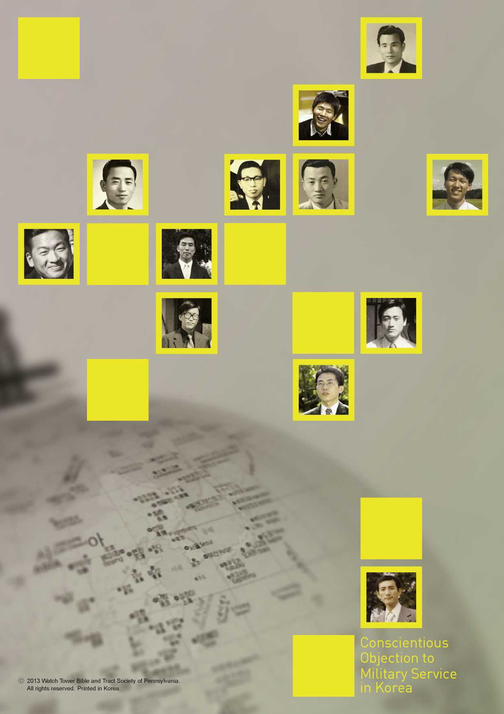

Statistics
Currently Imprisoned 583
Conscientious Objection to Military Service in Korea
Statistics
Currently Imprisoned 583
Petitioners who Received a Favorable
Decision from the CCPR in 2012
United Nations
Since the 1980’s, the UN Commission on Human Rights has taken the position that conscientious objectors to military service must be protected under Article 18 of the ICCPR*, which has the same effect as the domestic laws of Korea. In 2012, the UN Human Rights Committee(CCPR) released its Views regarding 388 individual petitioners indicating Korea’s clear violation of the ICCPR. This is the fourth time the CCPR has made such a decision on Korea.
*ICCPR: International Covenant on Civil and Political Rights
37
583
Imprisoned
On trial
Being investigated
Undetained 104 Detained 11
2012 UN Human Rights Committee (CCPR) Views
“The right to conscientious objection to military service inheres in the right to freedom of thought, conscience and religion. It entitles any individual to an exemption from compulsory military service if this cannot be reconciled with that individual’s religion or beliefs. The right must not be impaired by coercion.” § 7.4 Jong-nam Kim et al. Republic of Korea, UN Doc CCPR/C/106/ D/1786/2008 (25 Oct 2012)
17,445*
Punished each period
United States of America - “We are concerned that the Republic of Korea does not provide alternatives to military service for conscientious objectors. More than 700 conscientious objectors are currently serving jail terms waiting for another option to become available. Bearing in mind these concerns the United States makes the following recommendations... immediately introduce an alternative military service option.” 2012 Universal Periodic Review, UN Human Rights Council
Germany - “Germany is concerned about the long sentences handed down against conscientious objectors to military service. Germany recommends abolishing imprisonment and establishing a non-military service for conscientious objectors.”
2012 Universal Periodic Review, UN Human Rights Council
1950-1953 1954-1972 1973-1979 1980-1993 1994-2000 2001-2013
Korean Trial in Forceful Military 3 Year Trial in War Civil Court Enlistment Regime Sentence Civil Court
*Excluding 47 persons whose prison period is uncertain

Criminally Punished I / J
> v- *1 I to I I WAYS contribute
Ways to Serve '
the Community!!
Decisions by the CCPR Urging Alternative Measures
During the Japanese rule in Korea (1910~1945), Jehovah’s Witnesses suffered opposition and imprisonment for rejecting shrine worship and for allegedly preaching anti-war ideas. At the start of the Korean War in 1950, interrogation and imprisonment of conscientious objectors to military service began to develop. In the 1970’s, the maximum length of imprisonment for conscientious objectors was drastically increased from 3 years to 10 years. Witnesses were illegally dragged into military camps and were pressured to take up arms. During that time, at least five lost their lives by torture and beating.
Conscientious objection to military service based on religious conviction is not an avoiding of civil duties through draft evasion. Conscientious objectors have asked for purely civilian ways to serve their community. With no available alternative, they are imprisoned for maintaining their conscientious objection, a strong testament to the depth of their personal religious conviction. Each year, some 600 young men are criminalized. Despite this issue being highlighted by major media outlets starting in 2001, more than 8,000 conscientious objectors have been imprisoned since then. The current total number of conscientious objectors punished in Korea has reached 17,492.
Jehovah’s Witnesses have a history of abstaining from any form of warfare between nations. Participating in such conflicts would violate their Christian conscience which has been shaped by Jesus’ example. When Jesus was illegally arrested, he refrained from using physical force while stating, “Return your sword to its place. All those who take the sword will perish by the sword.”—Matthew 26:52.
Following this command, the early Christians refused military service, which led to hatred and persecution by the Roman Empire. In modern times, Jehovah’s Witnesses endured intense persecution under the Nazi regime. According to the book Sterben für den Frieden(Dying for Peace), by Eberhard Rohm, “It is estimated that in Germany alone some 6,000 to 7,000 of Jehovah’s Witnesses refused to do military service during World War II.” In Nazi Germany, at least 270 Witnesses were executed by state order for their refusal to take up arms.
“As to the issue of social cohesion and equitability, the Committee considers that respect on the part of the State for conscientious beliefs and manifestations thereof is itself an important factor in ensuring cohesive and stable pluralism in society. It likewise observes that it is in principle possible, and in practice common, to conceive alternatives to compulsory military service that do not erode the basis of the principle of universal conscription but render equivalent social good and make equivalent demands on the individual, eliminating unfair disparities between those engaged in compulsory military service and those in alternative service.” § 8.4 Yoon and Choi v.
Republic of Korea, UN Doc CCPR/C/88/D/1321-1322/2004 (3 Nov 2006)
“A State may, if it wishes, compel the objector to undertake a civilian alternative to military service, outside the military sphere and not under military command. The alternative service must not be of a punitive nature. It must be a real service to the community and compatible with respect for human rights.” § 7.3 Min-Kyu Jeong et al. v. Republic of Korea, UN Doc CCPR/C/101/ D/1642-1741/2007 (24 Mar 2011)
“In accordance with [...] the Covenant, the State party is under an obligation to provide the authors with an effective remedy, including expunging their criminal records and providing them with adequate compensation. The State party is under an obligation to avoid similar violations of the Covenant in the future, which includes the adoption of legislative measures guaranteeing the right to conscientious objection.” § 9 Jong-nam Kim et al. Republic of Korea, UN Doc CCPR/C/106/D/1786/2008 (25 Oct 2012)
© 2013 Watch Tower Bible and Tract Society of Pennsylvania. All rights reserved. Printed in Korea.
Conscientious Objection to Military Service in Korea